Détail du projet
Robotique industrielle — Communication industrielle et pilotage KUKA
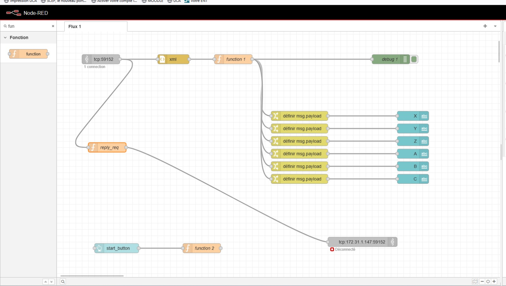
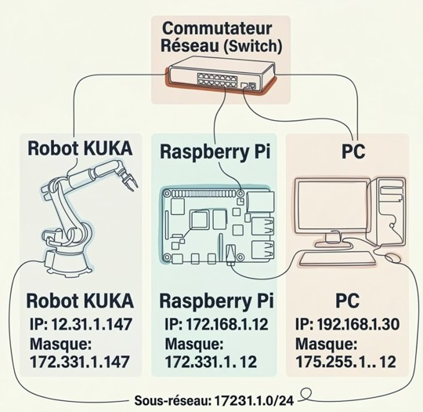
Contexte
Ce projet s’inscrit dans le cadre d’une mise en œuvre de communication industrielle autour d’un robot KUKA. L’objectif était de développer une architecture permettant le pilotage du robot à distance et l’échange de données en temps réel avec différents équipements au sein d’un réseau local industriel.
Travail réalisé
J’ai participé à la mise en place d’une communication Ethernet basée sur TCP/IP entre le robot et un Raspberry Pi. Le robot était programmé en KRL, avec l’utilisation de fichiers SRC pour la gestion des séquences et des échanges de données.
Les communications étaient structurées via des fichiers XML, permettant de transmettre les commandes (déplacements, lancement de cycle) et de récupérer les états du robot (positions, statuts, informations système) de manière standardisée.
Le Raspberry Pi jouait un rôle de passerelle de communication avec une interface développée sous Node-RED. Cette interface permettait :
- le pilotage à distance du robot
- la visualisation des données en temps réel
- la supervision des échanges entre les équipements
En complément, j’ai mis en place une communication basée sur le protocole MQTT afin de permettre le partage de données en temps réel avec une caméra connectée sur le même réseau local. Cette architecture publish/subscribe permettait d’échanger efficacement des informations (états, déclenchements, données de vision) entre le robot, la caméra et le système de supervision.
Le robot KUKA exploitait ces données pour enrichir son comportement, notamment en intégrant des informations externes dans la logique de décision (déclenchement d’actions, adaptation du cycle, interaction avec l’environnement).
Une attention particulière a été portée à la fiabilité des communications réseau, à la synchronisation des flux de données et à la gestion des connexions. Des phases de tests et validation ont permis de garantir la stabilité du système et la cohérence des échanges en conditions réelles.
Compétences mobilisées
Robotique KUKA, KRL, communication TCP/IP, Ethernet industriel, MQTT, XML, Raspberry Pi, Node-RED, systèmes distribués, intégration capteurs, validation.
Punching Machine — Siemens S7-1200, TIA Portal & IHM
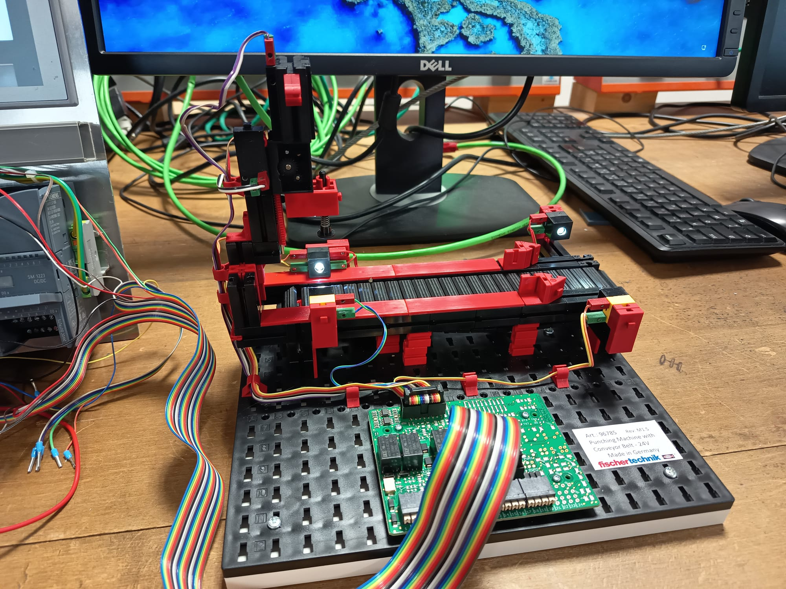
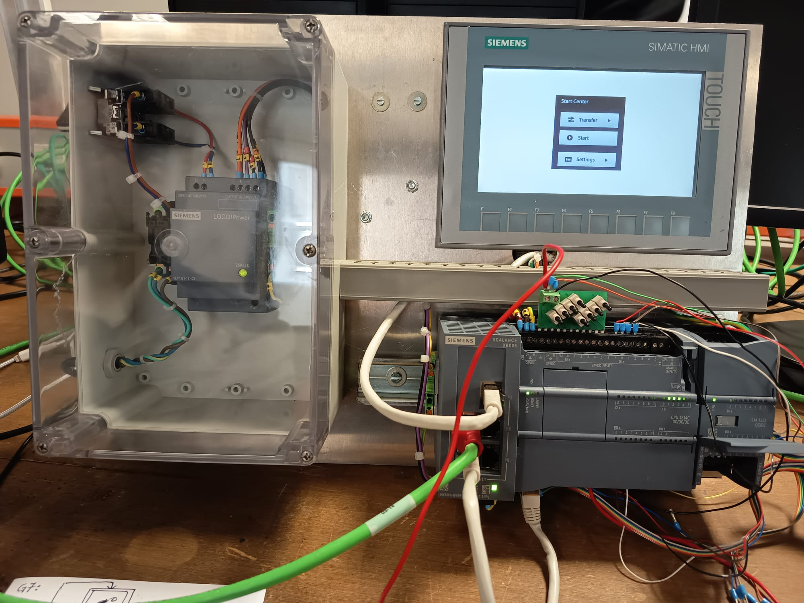
Contexte
Ce projet porte sur l’automatisation d’une station de poinçonnage équipée d’un convoyeur, pilotée par un automate Siemens S7-1200 et supervisée via une IHM KTP, le tout développé sous TIA Portal. L’objectif était de concevoir un système automatisé complet à partir d’un cahier des charges industriel, en intégrant la logique de commande, la gestion des modes et la supervision opérateur :contentReference[oaicite:0]{index=0}.
Cahier des charges
Le système devait assurer un cycle automatique de poinçonnage basé sur les éléments suivants :
- détection d’une pièce en entrée via un phototransistor (I1)
- convoyage de la pièce jusqu’au poste de poinçonnage
- arrêt du convoyeur lorsque la pièce est détectée sous le punch (I2)
- descente du poinçon jusqu’à la position basse (I4) puis remontée en position haute (I3)
- évacuation de la pièce par convoyeur en sens inverse (Q2)
Le système intègre également plusieurs contraintes :
- mode automatique (cycle complet)
- mode manuel pour pilotage direct des actionneurs
- gestion des états (initialisation, fonctionnement, arrêt)
- arrêt d’urgence avec remise à zéro du système
Travail réalisé
J’ai réalisé une analyse des entrées/sorties du système, en identifiant les capteurs (phototransistors, positions du poinçon) et les actionneurs (convoyeur avant/arrière, montée/descente du punch) :contentReference[oaicite:1]{index=1}.
À partir de cette analyse, j’ai conçu un GRAFCET de fonctionnement normal décrivant les différentes étapes du cycle automatique. En l’absence du langage SFC, j’ai implémenté ce GRAFCET sous forme de logique séquentielle en langage Ladder (LD), en codant les transitions et en utilisant une variable d’état (type mot d’étape) pour piloter le cycle.
Le programme a été structuré en plusieurs blocs :
- un bloc principal OB1 assurant l’exécution cyclique
- des fonctions (FC) pour la gestion des sorties
- une organisation modulaire facilitant la lisibilité et la maintenance
J’ai également implémenté les modes de marche et d’arrêt (GEMMA), avec gestion :
- du mode automatique (production)
- du mode manuel (pilotage direct)
- des conditions de transition entre les modes
- de l’arrêt d’urgence avec retour à l’état initial
En parallèle, j’ai développé une interface homme-machine (IHM) sous TIA Portal permettant :
- la sélection du mode Auto / Manuel
- l’initialisation du système
- le pilotage manuel des actionneurs (convoyeur, poinçon)
- la visualisation des états capteurs (I1, I2, I3, I4)
- l’affichage des états du système (Auto, Manuel, Arrêt d’urgence)
Enfin, des phases de tests et validation ont été réalisées afin de vérifier la cohérence du cycle, la gestion des transitions et la robustesse du système en conditions simulées et réelles.
Compétences mobilisées
Automatisme Siemens, S7-1200, TIA Portal, Ladder (LD), GRAFCET, GEMMA, IHM, logique séquentielle, structuration OB/FC, validation système.
Empileur / dépileur de palettes — Automatisme industriel
Fonctionnement du système d’empilage automatique
Fonctionnement du système de dépilage automatique
Contexte
Ce projet consiste en l’automatisation d’un système d’empilage et de dépilage de palettes, basé sur une machine virtuelle industrielle (POV) reproduisant un équipement réel de la société ERM Automatismes Industriels :contentReference[oaicite:0]{index=0}. L’objectif était de modéliser et programmer le comportement du système à partir d’un dossier technique complet.
Le système repose sur une architecture pneumatique intégrant plusieurs vérins, un convoyeur motorisé et des capteurs de position (ILS, fins de course), permettant de gérer la prise, le déplacement et le stockage des palettes.
Travail réalisé
J’ai débuté par une analyse approfondie du dossier technique, incluant l’identification des capteurs (B1 à B10) et des actionneurs (vérins pneumatiques, moteur de convoyeur). Cette étape m’a permis de comprendre les différentes phases du cycle ainsi que les interactions entre les éléments du système :contentReference[oaicite:1]{index=1}.
J’ai ensuite défini les conditions logiques permettant de déterminer les états du système, notamment :
- la position des taquets de prise de palette (entrés / sortis)
- la position de l’élévateur (haut, intermédiaire, bas)
À partir de cette analyse, j’ai élaboré un GRAFCET de niveau 2 décrivant le cycle complet d’empilage : prise de palette, montée de l’élévateur, positionnement, dépôt et retour à l’état initial. Ce GRAFCET intègre les conditions de transition basées sur les capteurs ainsi que la coordination des différents actionneurs.
Le programme a ensuite été implémenté sous ControlExpert, en utilisant les sections de lecture/écriture des entrées-sorties déjà fournies. J’ai complété la logique dans le programme principal en structurant les actions et transitions de manière claire et modulaire.
Une phase importante du projet a été la validation par simulation via la plateforme POV. J’ai pu :
- tester individuellement chaque actionneur en mode manuel
- vérifier la cohérence du cycle automatisé
- analyser le comportement du système en conditions réelles simulées
Enfin, j’ai enrichi le système avec des fonctionnalités avancées :
- mise en place d’un mode dépilage
- synchronisation des modes via un GRAFCET de conduite
- gestion de l’arrêt d’urgence avec réinitialisation du système
- ajout d’un compteur de palettes (CTUD) pour arrêt automatique après un nombre défini
- implémentation d’un mode coup par coup pour fonctionnement pas à pas
Compétences mobilisées
Automatisme industriel, ControlExpert, GRAFCET niveau 2, logique séquentielle, pneumatique industrielle, capteurs/actionneurs, simulation POV, compteur CTUD, gestion des modes, validation système.
Automatisation d’une cuve — GRAFCET & ControlExpert
Fonctionnement de la cuve
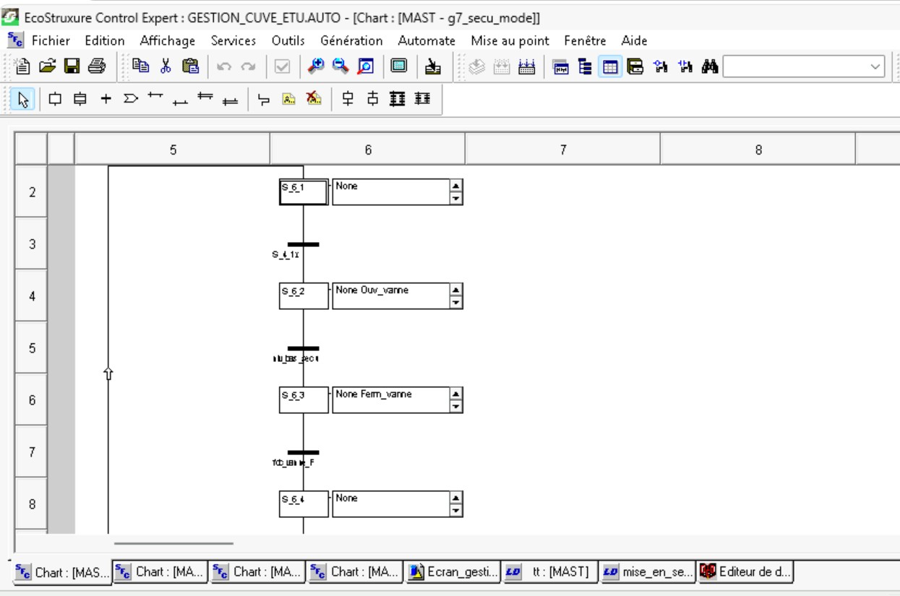
GRAFCET du système
Contexte
Ce projet porte sur le développement d’un système automatisé permettant la gestion du niveau d’une cuve, en s’appuyant sur une approche structurée basée sur le GRAFCET et l’environnement ControlExpert. L’objectif était de concevoir un programme capable de piloter un procédé industriel simple tout en intégrant les contraintes de fonctionnement, de sécurité et de modes opératoires.
Le système étudié est constitué de deux actionneurs principaux : une pompe de remplissage et une vanne de vidange, ainsi que de plusieurs capteurs de niveau (niveau bas, niveau haut, sécurité bas, sécurité haut) permettant de superviser l’état de la cuve :contentReference[oaicite:0]{index=0}.
Cahier des charges
Le fonctionnement attendu repose sur un cycle automatique de remplissage / vidange :
- Au démarrage, la cuve est à l’arrêt avec pompe inactive et vanne fermée
- Un appui sur “Démarrage cycle” lance le remplissage via la pompe
- Lorsque le niveau haut est atteint, la pompe s’arrête
- Après une temporisation, la vanne s’ouvre pour vidanger la cuve
- Lorsque le niveau bas est atteint, la vanne se ferme et un nouveau cycle démarre
Le système devait également intégrer :
- un arrêt cycle contrôlé (fin du cycle en cours avant arrêt)
- une temporisation entre les phases (ex : maintien au niveau haut)
- un compteur de cycles (arrêt automatique après un nombre défini)
- une gestion des modes de marche et d’arrêt (GEMMA)
- un système de sécurité (débordement ou niveau critique)
Travail réalisé
J’ai commencé par élaborer un GRAFCET fonctionnel décrivant les différentes étapes du cycle (remplissage, attente, vidange) ainsi que les conditions de transition associées (capteurs de niveau, temporisations).
Ce GRAFCET a ensuite été implémenté sous ControlExpert, en utilisant des sections de programme dédiées et en structurant les transitions en langage ST (Structured Text) ou LD (Ladder). Le programme a été conçu de manière modulaire afin de faciliter la lisibilité et l’évolution.
J’ai intégré des temporisations (TON) pour gérer les délais entre les actions (notamment le maintien au niveau haut avant vidange), ainsi qu’un compteur (CTU) permettant de limiter le nombre de cycles exécutés.
Une partie importante du projet a consisté à mettre en œuvre un GRAFCET de conduite (GEMMA), permettant de gérer les différents modes :
- mode automatique
- arrêt contrôlé
- redémarrage du système
J’ai également développé un GRAFCET de sécurité permettant de gérer les situations critiques. En cas d’atteinte du niveau haut de sécurité, le système force l’arrêt du cycle, coupe la pompe et ouvre la vanne jusqu’à vidange complète (niveau bas de sécurité), avant retour à l’état initial :contentReference[oaicite:1]{index=1}.
Enfin, l’ensemble du programme a été testé en mode simulation, en utilisant un environnement permettant de reproduire le comportement des capteurs et actionneurs. Cette phase m’a permis de valider la cohérence du GRAFCET, la gestion des transitions et la robustesse du système face aux différents scénarios de fonctionnement.
Compétences mobilisées
Automatisme industriel, ControlExpert, GRAFCET, GEMMA, logique séquentielle, temporisation (TON), compteur (CTU), simulation, gestion des sécurités, validation fonctionnelle.
Conception d’une éolienne — Siemens NX
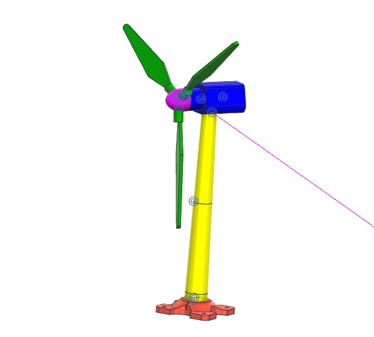
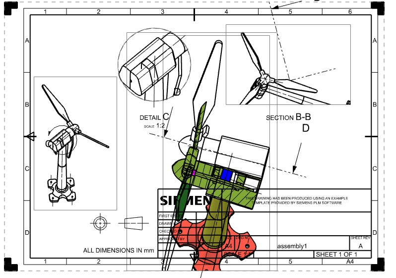
Contexte
Projet de conception mécanique visant à modéliser une éolienne complète sous Siemens NX, en suivant une démarche d’ingénierie structurée allant de l’analyse du besoin jusqu’à la réalisation d’un assemblage fonctionnel.
Travail réalisé
J’ai défini un cahier des charges fonctionnel en prenant en compte les contraintes mécaniques, structurelles et environnementales. J’ai ensuite conçu les différentes pièces du système (pales, mât, nacelle, supports) en utilisant les outils de modélisation paramétrique de Siemens NX.
Chaque composant a été dimensionné et assemblé dans un modèle 3D complet, en respectant les contraintes d’alignement, d’interface et de cohérence mécanique. Une attention particulière a été portée à la gestion des assemblages, aux liaisons mécaniques et à la structuration du projet CAO.
Compétences mobilisées
CAO, Siemens NX, conception mécanique, modélisation 3D, assemblage, analyse fonctionnelle, conception paramétrique.
IA appliquée — Machine Learning & Deep Learning
.png)
Contexte
Ce projet regroupe plusieurs travaux pratiques en intelligence artificielle appliquée, centrés sur la mise en œuvre de modèles de Machine Learning et de Deep Learning à partir de données réelles. L’objectif était de maîtriser les différentes étapes d’un pipeline IA complet : préparation des données, entraînement, évaluation et interprétation des modèles.
Travail réalisé
J’ai travaillé sur plusieurs types de modèles :
- Régression linéaire pour modéliser des relations entre variables
- Classification binaire pour la prise de décision (ex : séparation de classes)
- Réseaux de neurones (MLP) implémentés from scratch puis avec des frameworks
- Deep Learning avec PyTorch, notamment sur le dataset MNIST (reconnaissance de chiffres)
Le travail a porté sur :
- la préparation et structuration des datasets (normalisation, séparation train/test)
- l’implémentation des modèles et des fonctions de coût
- l’optimisation via descente de gradient et ajustement des hyperparamètres
- l’analyse des performances (accuracy, loss, overfitting)
- l’utilisation d’un environnement de travail sous Jupyter Notebook avec environnement Python dédié :contentReference[oaicite:0]{index=0}
Une attention particulière a été portée à la compréhension des mécanismes internes des modèles, notamment la propagation avant (forward) et la rétropropagation du gradient (backpropagation) dans les réseaux de neurones.
Compétences mobilisées
Python, Machine Learning, Deep Learning, PyTorch, réseaux de neurones (MLP), préparation de données, descente de gradient, évaluation de modèles, Jupyter Notebook.
Robot LIMO sous ROS2
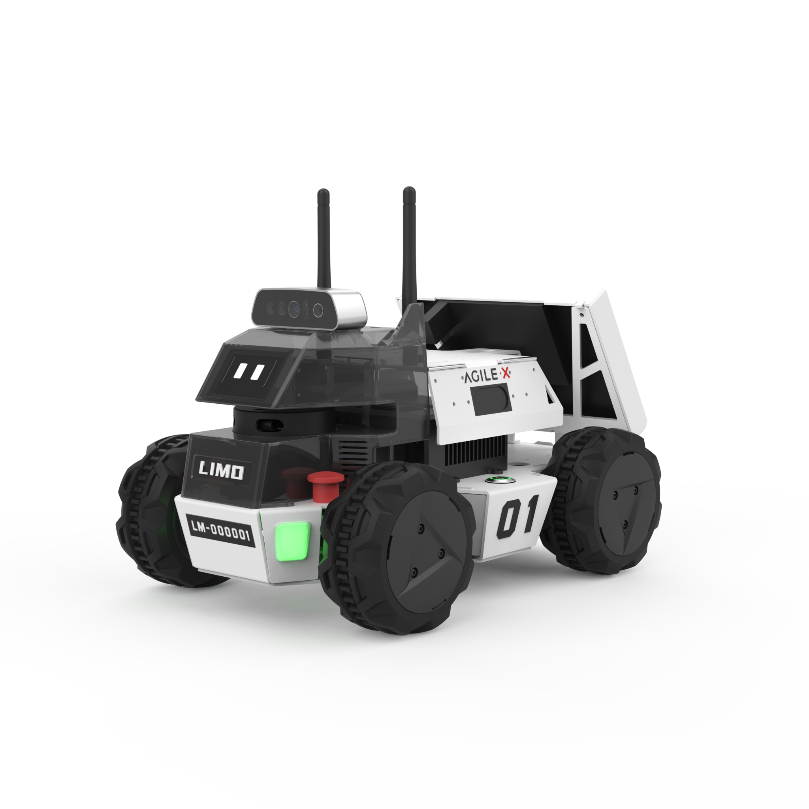
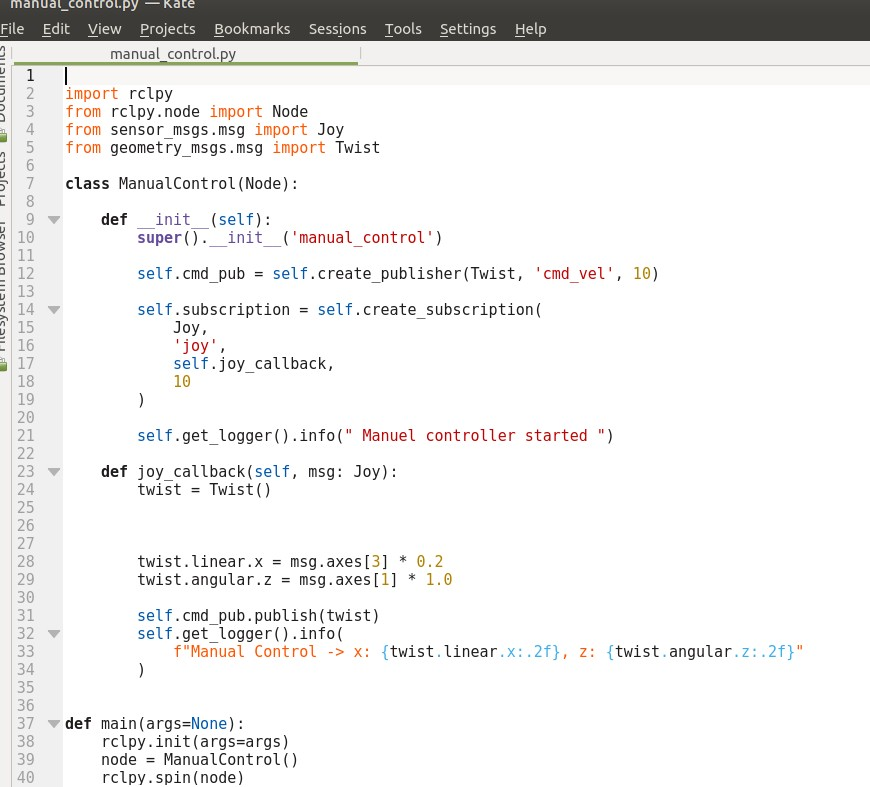

Aujourd’hui, les architectures robotiques modernes reposent de plus en plus sur des frameworks comme ROS2, notamment dans les domaines de la robotique mobile, de la logistique intelligente ou encore des véhicules autonomes. C’est dans ce contexte que j’ai travaillé sur le robot LIMO, avec l’objectif de concevoir une solution capable de fonctionner à la fois en mode manuel et en mode autonome.
J’ai développé ce projet dans un environnement basé sur ROS2 et Gazebo, en adoptant une architecture modulaire et structurée. Le système a été organisé en plusieurs nœuds distincts — perception, décision et commande — qui communiquent entre eux via les mécanismes de ROS2. Cette manière de concevoir le projet s’inscrit dans une logique proche de l’orienté objet et de l’ingénierie logicielle moderne.
Le robot devait fonctionner selon deux modes. En mode manuel, activé via joystick, j’ai implémenté la gestion des commandes de vitesse linéaire et angulaire pour assurer un pilotage stable. En mode autonome, le robot devait sortir d’un labyrinthe en appliquant une stratégie de suivi du mur gauche. J’ai donc développé une logique de navigation capable d’ajuster la trajectoire en fonction des distances mesurées.
Un point particulièrement important du projet a été la gestion de la sécurité. J’ai mis en place des règles de décision basées sur la détection d’obstacles : blocage de l’avancement lorsqu’un mur est détecté à moins de 30 cm et recul contrôlé lorsqu’il est détecté à moins de 50 cm.
Ce projet m’a réellement fait évoluer dans ma manière de travailler. Il ne s’agissait plus seulement d’écrire du code, mais de concevoir un système complet, lisible et évolutif. Il m’a aussi donné envie d’aller plus loin sur des sujets aujourd’hui très utilisés en robotique, comme la fusion de capteurs, les algorithmes de SLAM ou encore la gestion avancée des communications sous ROS2.
Asservissement et régulation sous MATLAB/Simulink
Régulation du niveau d’eau d’une cuve


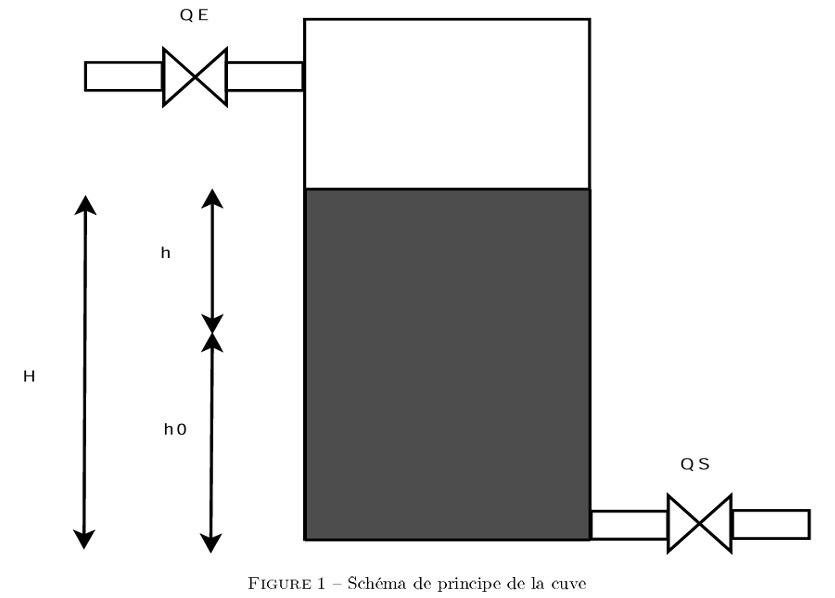
Ce projet m’a permis de travailler sur une problématique classique en automatique, directement liée à des applications industrielles telles que le traitement de fluides, les procédés chimiques ou encore la gestion de réservoirs. À partir des lois physiques du système, j’ai construit un modèle représentant l’évolution du niveau d’eau dans une cuve, puis j’ai exploité MATLAB/Simulink pour analyser son comportement.
J’ai d’abord étudié le procédé en boucle ouverte afin de comprendre sa dynamique propre, avant de mettre en place une commande proportionnelle. Le réglage a été réalisé avec un objectif clair de précision en régime permanent, puis affiné en boucle fermée pour obtenir un comportement stable et cohérent. Une analyse de sensibilité m’a ensuite permis d’identifier les paramètres les plus influents sur la stabilité et sur la qualité de la réponse.
Au-delà de la simulation, ce projet m’a appris à raisonner comme sur un cas réel : comprendre le procédé avant de chercher à le corriger, et justifier les choix de réglage par le comportement du système. C’est aussi ce que j’ai trouvé particulièrement formateur : passer d’un modèle théorique à une logique d’ingénierie structurée.
Régulation de la vitesse d’un servomoteur à courant continu RS640E


Dans la continuité, j’ai travaillé sur la régulation de vitesse d’un moteur à courant continu, un sujet très présent dans les systèmes embarqués, la robotique et les chaînes automatisées. À partir des données constructeur, j’ai paramétré et modélisé le moteur, puis étudié son comportement dynamique à vide et en charge sous Simulink.
Sur cette base, j’ai conçu un correcteur PI afin de répondre à des exigences de performance concrètes : rapidité, stabilité et suppression de l’erreur statique. J’ai comparé plusieurs jeux de paramètres afin d’évaluer le compromis entre vitesse de réponse et robustesse, ce qui m’a permis de mieux comprendre la logique de réglage dans un contexte proche des contraintes industrielles.
Ce projet a renforcé ma compréhension des systèmes dynamiques et de la commande, mais aussi ma capacité à exploiter un environnement de simulation comme un véritable outil d’aide à la décision. C’est précisément ce type de projet qui m’a donné envie d’aller plus loin, à terme, vers des approches de commande plus avancées sur des systèmes réels et plus complexes.
Traitement d’images — Contrôle qualité non destructif de tissus composites (Python)
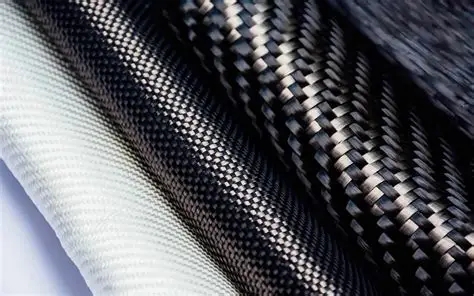
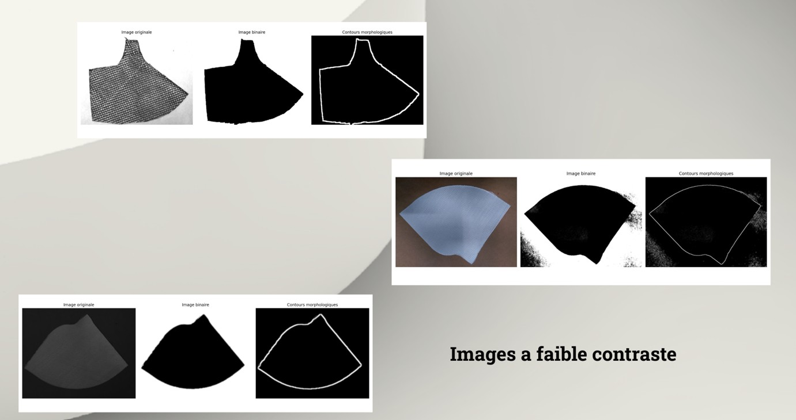
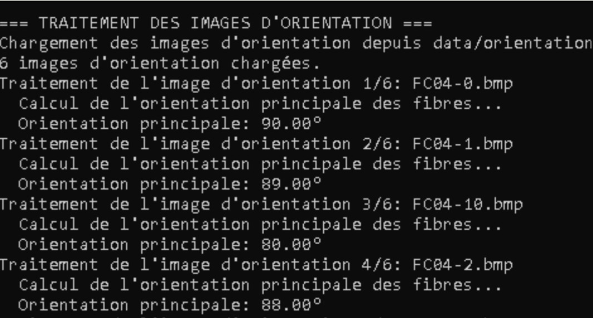
Le traitement d’images est aujourd’hui de plus en plus utilisé dans l’industrie, notamment pour le contrôle qualité automatisé. C’est dans cette logique que j’ai développé une application Python dédiée à l’analyse d’images de tissus composites dans un contexte de contrôle non destructif.
L’objectif était d’extraire des indicateurs fiables à partir d’images acquises sur un dispositif expérimental, afin d’identifier d’éventuels défauts d’orientation des fibres. Ce type d’analyse est particulièrement pertinent dans des secteurs comme l’aéronautique.
J’ai développé ce projet dans un environnement basé sur Python, en utilisant NumPy, OpenCV, Pandas et Matplotlib. Le projet a été organisé de manière modulaire, avec plusieurs fichiers dédiés aux différentes étapes du pipeline, dans une logique proche de l’orienté objet.
Sur le plan technique, j’ai mis en place une chaîne de traitement complète : pré-traitement des images, binarisation, opérations morphologiques, extraction des contours, puis calcul de métriques comme le périmètre et l’aire. J’ai également automatisé l’export des résultats dans un fichier CSV.
Ce projet m’a appris à structurer un développement comme un vrai projet logiciel, et pas seulement comme une succession de scripts. Il m’a donné envie d’aller plus loin vers des approches encore plus avancées, comme les CNN, le traitement d’images en conditions réelles ou les pipelines de vision intégrés à des systèmes embarqués.
Robot mobile autonome – Arduino
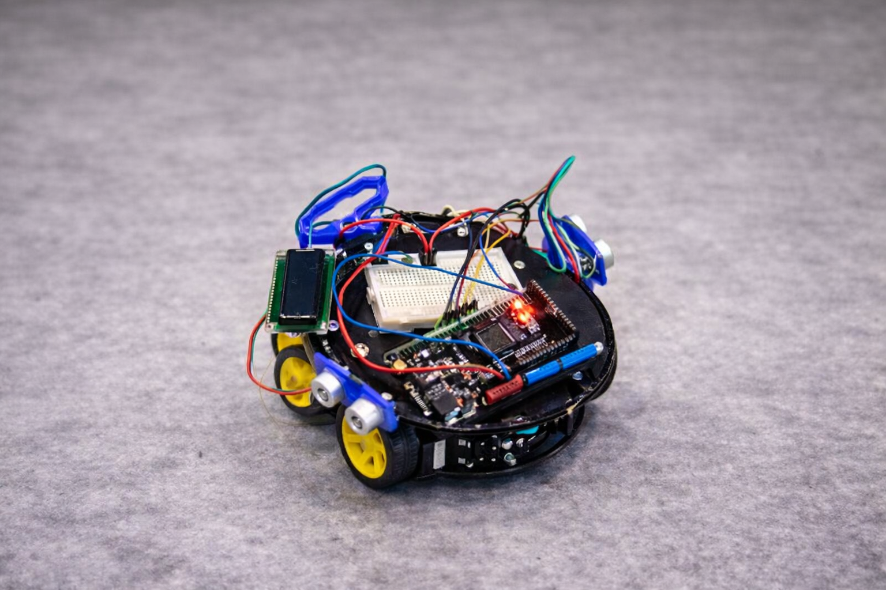
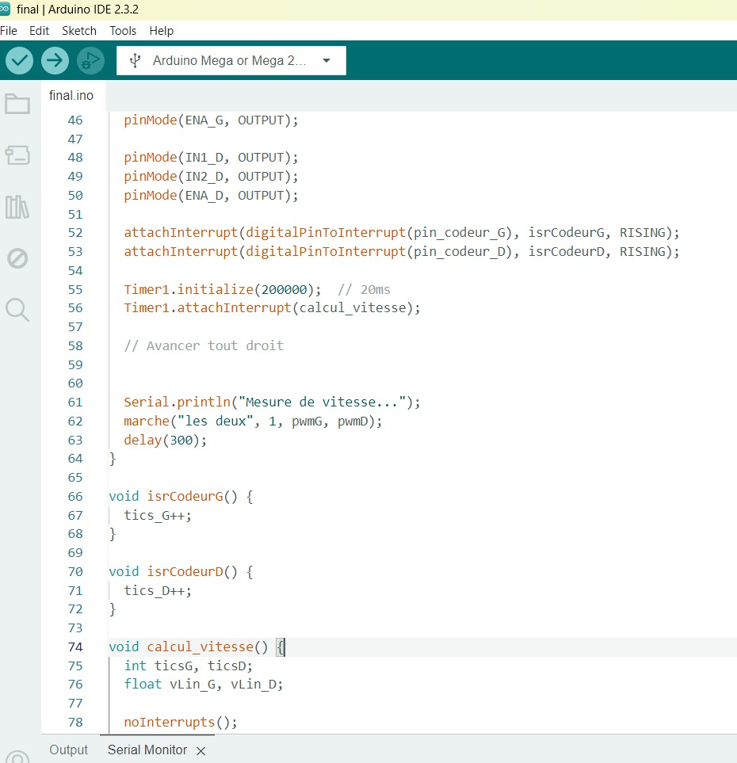
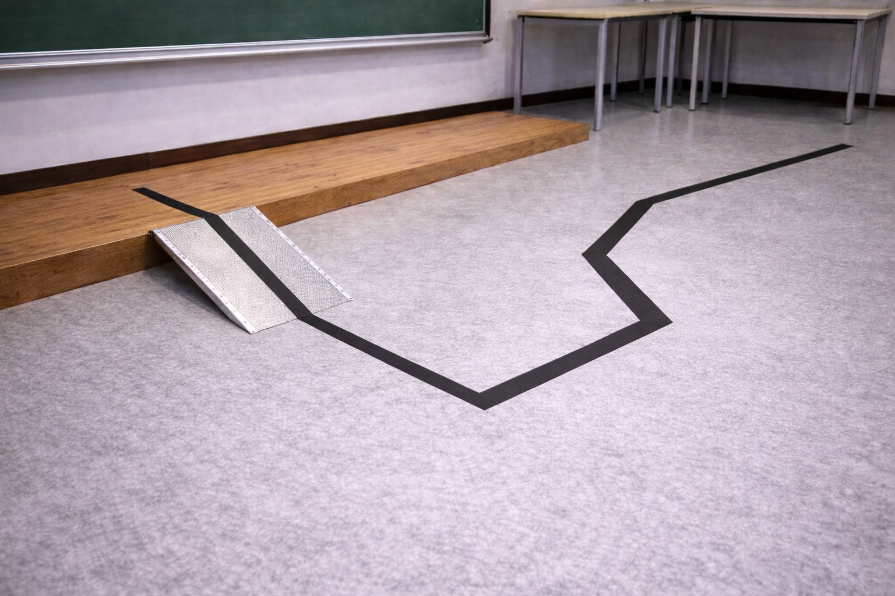
Ce projet m’a permis de développer un système embarqué complet, en combinant assemblage mécanique, câblage électronique et programmation sous Arduino. À partir du cahier des charges, j’ai réalisé le montage du robot, l’intégration des actionneurs et des alimentations, puis la vérification de l’ensemble avant la phase logicielle.
L’objectif était de faire suivre au robot une trajectoire imposée, comprenant une descente de pente puis un virage à droite d’environ 45°, tout en conservant un déplacement stable. Pour répondre à cette contrainte, j’ai développé la logique de commande sur Arduino et intégré un correcteur PI pour la régulation de la vitesse des moteurs.
J’ai également ajouté un système de signalisation par LEDs afin de rendre l’état du robot plus lisible pendant les essais. La phase de test a été essentielle et m’a permis d’ajuster progressivement les paramètres jusqu’à obtenir une trajectoire stable et fiable.
Projet FPGA – Chronomètre
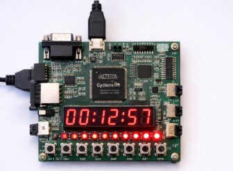
Dans le cadre de ce projet, j’ai conçu et implémenté un chronomètre numérique sur FPGA en m’appuyant sur l’environnement de développement Quartus et le langage de description matérielle VHDL. L’objectif était de développer une architecture synchrone, déterministe et optimisée, capable de fonctionner en temps réel tout en respectant les contraintes propres aux systèmes numériques embarqués.
L’architecture du système repose sur une décomposition en blocs fonctionnels modulaires. J’ai notamment développé un diviseur d’horloge (clock divider) permettant de générer des signaux à fréquence adaptée à partir de l’horloge principale du FPGA. Des compteurs synchrones ont été conçus pour assurer l’incrémentation précise du temps (secondes, sous-secondes), accompagnés de registres pour le stockage et la stabilisation des données en sortie.
La gestion globale du système est assurée par une logique de contrôle séquentielle, implémentée sous forme de machine à états finis (FSM). Celle-ci pilote les différentes commandes du chronomètre telles que start, stop, reset, tout en garantissant une transition d’états fiable et sans ambiguïté. Une attention particulière a été portée à la synchronisation des signaux et à la gestion des fronts d’horloge afin d’éviter tout comportement indéterminé.
Chaque module a fait l’objet de simulations fonctionnelles et de vérifications temporelles avant son intégration dans le design global. Cette approche basée sur la validation incrémentale m’a permis d’optimiser la robustesse du système, de faciliter le débogage et d’assurer une meilleure maintenabilité du projet.
Ce projet illustre ma maîtrise des concepts avancés en conception logique, en programmation VHDL, ainsi qu’en architecture de systèmes numériques sur FPGA. Il démontre également ma capacité à concevoir des solutions matérielles performantes, structurées et adaptées aux exigences du temps réel.
Application LabVIEW


Dans le cadre de ce projet, j’ai conçu et développé une application LabVIEW en mettant l’accent sur l’expérience utilisateur et la simplicité d’utilisation. L’objectif principal était de proposer une interface intuitive permettant à l’utilisateur de sélectionner une dosette de café selon deux critères essentiels : l’intensité du café et le volume de tasse souhaité.
Pour répondre à ce besoin, j’ai imaginé une interface claire, visuelle et facile à prendre en main, afin de rendre la navigation fluide même pour un utilisateur novice. L’application permet ainsi d’orienter rapidement le choix du produit en fonction des préférences de consommation, tout en offrant une présentation structurée des différentes options disponibles.
Sur le plan technique, j’ai organisé le développement autour d’un VI principal, chargé de piloter la logique générale de l’application, et de plusieurs sous-VIs dédiés à des fonctions spécifiques. Cette architecture modulaire m’a permis de séparer clairement les différentes fonctionnalités du programme, d’améliorer la lisibilité du code et de faciliter les phases de maintenance, de test et d’évolution.
J’ai également développé une fonction d’authentification permettant de sécuriser l’accès à l’interface. Cette fonctionnalité inclut une gestion du nombre d’essais autorisés ainsi qu’un accès conditionnel en fonction des informations saisies. Ce système renforce la fiabilité de l’application tout en introduisant une logique de contrôle d’accès adaptée au contexte du projet.
Ce projet m’a permis de mettre en pratique plusieurs compétences, notamment en programmation sous LabVIEW, en conception d’interface utilisateur, en structuration modulaire d’une application et en gestion des droits d’accès. Il illustre ma capacité à développer une solution à la fois fonctionnelle, structurée et orientée utilisateur.
Conception de carte électronique
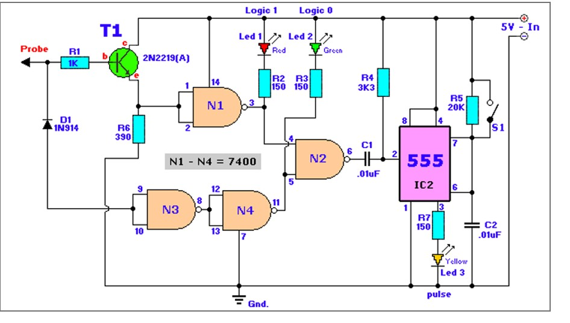
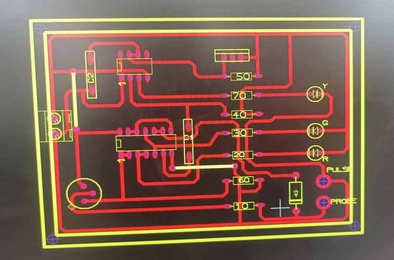
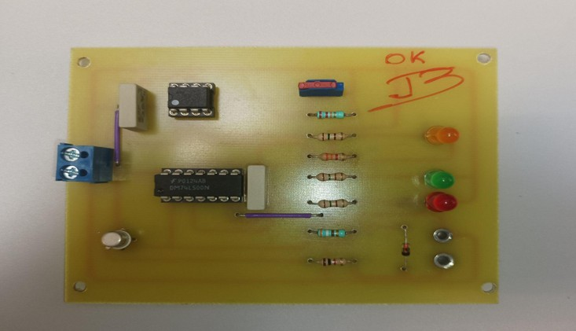
Dans ce projet, je suis partie d’un schéma électrique de base représentant une sonde d’état logique, puis j’ai pris en charge l’ensemble de la chaîne de réalisation, depuis l’étude du circuit jusqu’à la conception du PCB, sa fabrication et sa validation expérimentale. L’objectif était d’obtenir une carte électronique fonctionnelle, compacte et exploitable en conditions réelles.
J’ai d’abord analysé le schéma afin de bien comprendre le rôle de chaque composant, les liaisons électriques et le fonctionnement global du montage. Cette étape m’a permis de préparer correctement l’implantation de la carte et d’anticiper les contraintes liées à l’alimentation, à la circulation des signaux et à l’intégration des composants.
J’ai ensuite réalisé le placement des composants sur le circuit imprimé en veillant à organiser la carte de manière cohérente, lisible et compacte. J’ai poursuivi avec le routage des pistes, en recherchant le meilleur compromis entre clarté du tracé, limitation des croisements, respect des contraintes de fabrication et qualité globale de l’implantation.
Une fois la conception validée, j’ai préparé la phase de fabrication du PCB, puis procédé à l’assemblage et aux vérifications nécessaires. Enfin, j’ai réalisé les tests de fonctionnement afin de contrôler la continuité électrique, valider le comportement du circuit et vérifier que la sonde remplissait correctement sa fonction. Ce projet m’a permis de développer une vision concrète et complète de la chaîne de conception électronique, depuis le schéma jusqu’au prototype fonctionnel.